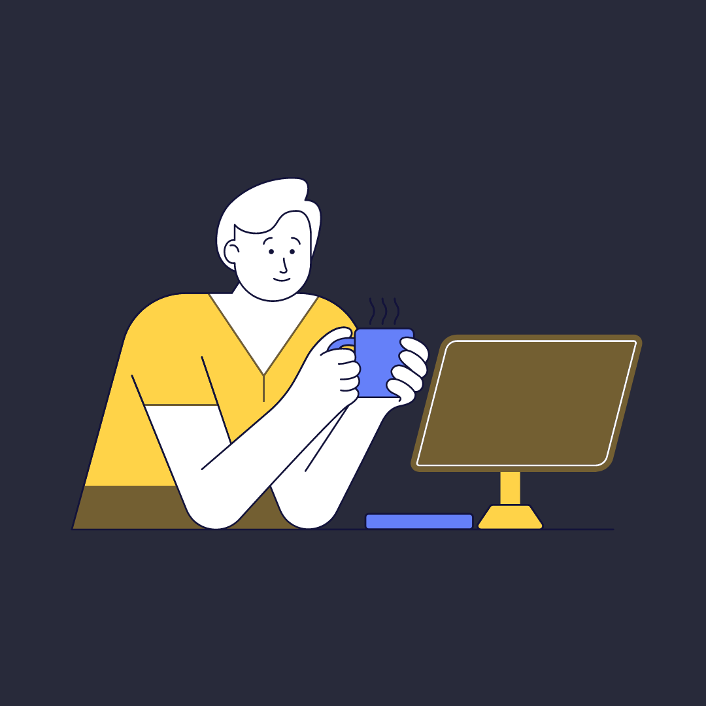
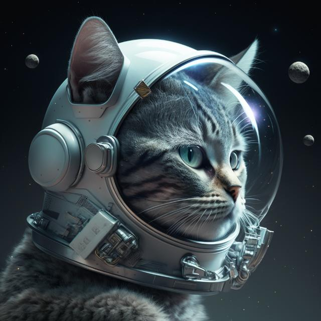
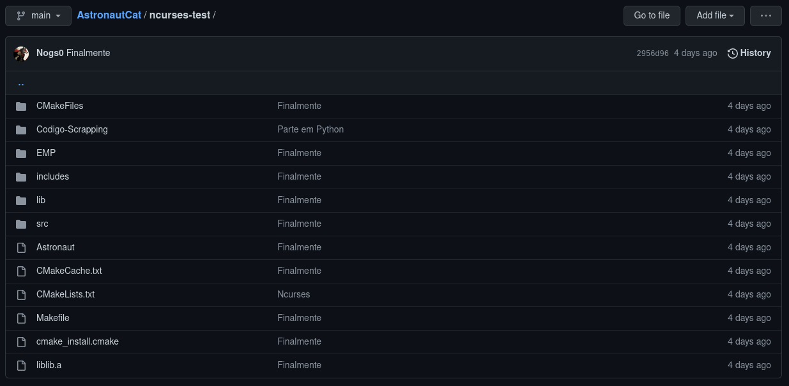

Sobre Mim
Me chamo João Guilherme Nogueira, um dos tantos jovens que prezam pelos seus sonhos, seu presente e até o futuro... Cheguei aqui meio por acaso e gostei muito do lugar onde parei, tanto conhecimento, oportunidades e realmente uma chance de fazer o que gosto. Já fui de vendedor de chup-chup na escola até vendedor de cachorro-quente, há algum tempo a faculdade era uma grande incerteza na minha vida. E até que tenho jeito pra vendedor, hoje estou fazendo parte do valor da mensalidade só vendendo cones de chocolate.
E que oportunidade de ouro acabou caindo no meu colo, estava fazendo um curso de Manutenção de Computadores e fiz um ENEM razoável, que me fez conseguir 50% de bolsa em Ciência da Computação, minha família esperava mais. Vejo que faltou comprometimento ao estudar para o mesmo, mas estava feliz fazendo o curso e realmente me faltava ambição naquele momento. Minha namorada me ajudou muito com isso, me fez abraçar a oportunidade da possibilidade de algo maior.

O meu início com os PCs foi com os games, meu primo, hoje, formado na PUC em CC, era viciado em jogar Tíbia, tudo que eu queria era poder jogar com ele, mas ele não me deixava jogar e eu não tinha computador para poder jogar eu mesmo, então ficava lá admirado vendo-o jogar e querendo entender como que poderia algo tão divertido ser feito.
Porém minha vida tomou outro rumo, quando mais novo era apaixonado por esportes, aquele que topava qualquer coisa só para sair correndo por aí, gastar energia e chutar ou arremessar uma bola. Isso me fez participar de diversas competições, sempre como capitão das equipes, não sei o que os treinadores viam em um rapaz gordinho para me dar este cargo, mas pelo visto até meus companheiros gostavam que eu fosse este cara. Depois de um tempo, achava massa o número 01 nas costas e a faixa vermelha no braço. E esse sou eu, na forma mais resumida possível...
Faculdade
A experiência na PUC vem sendo muito boa, não diria perfeita, mas tenho aprendido demais e, como disse anteriormente, se não fosse a faculdade, não teria me descoberto como um apaixonado por saber como as coisas funcionam. Algo que tentei passar explicitamente aos alunos do nosso projeto de extensão "Hello, world! - Ensinando a Programar", saber como tudo funciona pode ser meio chato no começo, contudo, após alguns minutos de mão na massa, passamos a ver o mundo de outra forma!
Digo que a experiência na PUC não foi perfeita por certo desapontamento com alguma matéria ou desânimo durante o semestre com outra, comecei esse período muito animado, com vontade de aprender e me desafiar, me desafiei e aprendi demais, só que eu queria mais um pouco...
Não atoa dizem que a universidade é um divisor de águas, tanta gente nova, um de cada canto da cidade, estado, de uma escola diferente, de uma vivência completamente diferente da sua. Conhecer a motivação de cada um me deixa ainda mais motivado a aprender, esse tipo de competição saudável me faz muito bem. Chegar um dia falando que viu algo que poderia ajudar em tal coisa e discutir sobre, no outro seu colega chega com outra solução completamente diferente. A troca que tudo isso traz não se encontra em qualquer lugar...
Mais uma coisa que eu gostaria de falar, é que o projeto de extensão no começo parecia ser bem sem graça, uma das primeiras coisas era, "já não tenho tempo para nada e ainda tem mais essa?", e mesmo com a falta deu pra ver que nos viramos, mesmo com alguns tropeços conseguimos receber um feedback muito legal dos que ficaram conosco até o final do projeto. Foi incrível ministrar as aulas e escutar as mesmas perguntas que eu fazia quando estava começando, e podendo responder com propriedade! Foi uma das coisas que me deu mais garra durante o semestre. Voltar a ver tudo com os olhos brilhando!
Agora gostaria de falar sobre o projeto do Claudinho/Marcelo, o quanto me fez evoluir como programador como estudante e como apaixonado por tecnologia, as pesquisas que precisavam ser feitas, a persistência pelo tanto de coisa que vinha dando errado, grupo perdendo componentes, falta de comprometimento dos que ficaram... Tenho muito a agradecer ao Matheus, o cara que não abaixou a cabeça e fez o negócio acontecer junto comigo foram algumas noites muito mal dormidas para fazer um projeto que inicialmente incluía 5 pessoas.
Mais um aprendizado na faculdade, não lembro qual professor que disse uma vez, "escolha seus grupos com amor, mas também com consciência", porque pensa em um lugar com gente folgada, nunca mais quero passar por isso...
Galeria
Projetos
Astronaut Cat
Esse semestre foi sem dúvidas o que mais me empenhei nos meus projetos, seja em grupo ou individual, no início desse período eu já havia prometido para mim mesmo que focaria mais nas minhas atividades, de fato gostaria de me superar, após muito estudo durante as férias. E acabei cumprindo esta meta!
O projeto que mais me empenhei e de fato fiz acontecer, foi como eu já havia dito o do Claudinho, nosso 'Astronaut Cat', um programa que surgiu com a ideia de ser um controle de estoque aliado à um alerta de validade. Tudo partiu de um problema recorrente encontrado no supermercado onde o Matheus trabalhava, que vive tendo problemas com produtos vencidos, a ideia era acabar com tudo isso. Com o desenrolar do projeto perdemos componentes, como comentei e tivemos que mudar o rumo de tudo, buscar outros meios para resolver o nosso problema e, que necessitava da linguagem C, após algum tempo de estudo e auxílio de professores, chegamos no ponto do "Só falta a interface gráfica". Antes disso enfrentamos dificuldades com o site de onde retiraríamos as informações, falta de prática na manipulação de arquivos e a falta de tempo.
Hello, world!

Um dos trabalhos mais difíceis que eu já fiz